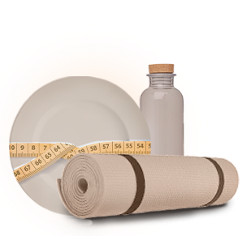
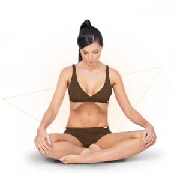
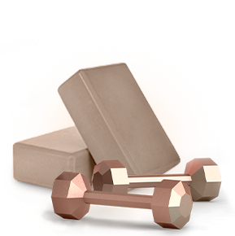
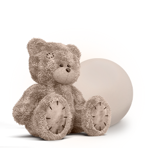

практический курс "я - это наули"
Освойте секретные йога-практики, которым более 5000 лет,
научитесь осознанно управлять мышцами живота и
создайте талию мечты
- 20 видеоуроков
- 0 изнуряющих тренировок
- 30 дней обучения
- 3 недели до получения результата
- 20 минут ежедневно
Просмотрите наше видео и замотивируйте себя на новую жизнь с красивой талией
Курс будет полезен вам, если

ХОТИТЕ ПОХУДЕТЬ
и желаете сбросить надоедливый лишниый вес

ЙОГ
желающий освоить технику очищения Хатха-йоги

Спортсмен
желающий быть в форме без тяжелых тренировок

Вы мама в декрете
стремящаяся в короткие сроки вернуть красоту фигуры